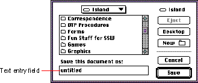

|
Text Entry FieldsThe text entry field is typically a rectangular box in a dialog box where the user enters some text to identify something. It is also called an editable text field. For example, in the Save As dialog box, the user types in the name of a document. Figure 7-19 shows an example of a text entry field.Figure 7-19 A text entry field  If an application isn't primarily a text application, but does use text in fields, you may not need to provide the full text-editing capabilities. In Macintosh applications, the simplest way to implement text editing is to use TextEdit, or to use the Dialog Manager, which in turn uses TextEdit. You need to make sure that whatever level of text-editing capabilities you implement for text entry fields is upward compatible with the full text-editing capabilities. You should implement these editing capabilities:
Even applications with only minimal text editing should perform appropriate edit checks. For example, if the only legitimate value for a field is a string of digits, the application should issue an alert message if the user types any nondigits. For example, the alert message might interrupt the user to remind him or her that the letters l and o can't be used in place of the numerals 1 and 0. Alternatively, the application could wait until the user is through typing before checking the validity of a field's contents. In this case, the appropriate time to check the field is when the user clicks anywhere other than within the field or presses the Return, Enter, or Tab key. |